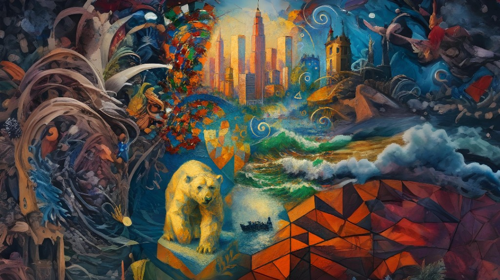

Memorándum EDUSSE
EDUSSE es un universo pictórico en expansión, una constelación de estilos que comparten un principio fundamental: la figura no representa; la figura permite. En EDUSSE, cada obra se construye desde el tratamiento pictórico —el trazo, la energía, la atmósfera, la estructura— y no desde el motivo. La pintura deja de ser ventana y se convierte en campo de acción, donde el color, la materia y el gesto definen la identidad de cada pieza.
Este universo se organiza en familias estilísticas que dialogan entre sí: líneas de energía, de estructura, de atmósfera, de intervención y de claridad formal. Cada estilo es una rama autónoma, pero todos comparten una misma raíz conceptual: la libertad absoluta para redefinir la pintura desde dentro.
EDUSSE no es un estilo único, sino un ecosistema. Un territorio donde conviven la vibración gestual, la geometría facetada, la atmósfera suspendida, la intervención gráfica y la materia erosionada. Un espacio donde cada obra es una variación, una expansión o una mutación del mismo principio: pintar no lo que se ve, sino lo que vibra.
Índice de Familias Conceptuales
A. Familia Energía (Gesto, vibración, movimiento, colisión)
- EXP NEOCIRC — Gesto circular, energía pictórica, vibración emocional.
- FUZZTESS — Textura energética, gesto ondulante, vibración expansiva.
- ABSTRACTO CONFLUENCIA — Colisión gestual, ritmo circular, caos armónico.
- EXPNEO — Atmósfera suspendida con gesto vibrante y luz emocional.
B. Familia Estructura (Geometría, volumen, fragmentación)
- OLEOCUBBO — Volumen facetado, pincelada gruesa, geometría pictórica.
- FRACNEO — Fragmentación estructural, arquitectura emocional.
- CRISTAL CUBICO — Verticalidad urbana, luz facetada, monumentalidad.
- RECTESSE — Segmentación geométrica, ritmo compositivo, tensión estructural.
- TEREXSE — Materia terrestre, relieve pictórico, energía geológica.
- CUBESSE — Identidad visual estructural (Firma).
- CUBESSEPLUS — Versión mitológica y monumental.
C. Familia Atmósfera (Luz, emoción, pausa, vibración ambiental)
- URBANSPHERIC — Atmósfera urbana, luz emocional, gesto envolvente.
- BORACARBON — Sobriedad monocroma, pausa narrativa, textura contenida.
- PLUMINK — Fluidez acuarelada, atmósfera vibrante, trazo líquido.
- NEOINK — Energía ascendente, luz radial, espiritualidad pictórica.
- OCE-BURST — Pincelada escultórica, dinamismo abstracto, luz dramática.
- NEO-LUMINA — Pincelada de luz, contraste profundo, estética ciberpunk.
D. Familia Intervención (Capa gráfica, distorsión, líneas flotantes)
- FUZZLINE ABS — Intervención gráfica, línea flotante, distorsión vibrante.
E. Familia Claridad Formal (Equilibrio, elegancia, estructura clásica)
- IDE CLASSIC — Claridad formal, equilibrio compositivo, elegancia.
- APLICC — Aplicación de energía simbólica.
- EXPNEOPLUS — Evolución monumental de EXP NEOCIRC.
F. Marco General
- EDUSSE — Universo pictórico global.
EDUSSE MARCO GENERAL
EDUSSE funciona como marco conceptual, identidad estética y territorio simbólico donde se articulan todas las líneas creativas del artista. Es un lenguaje total donde figura y fondo, materia y significado, emoción y estructura conviven sin jerarquías.
Rasgos Esenciales
Hibridación de lenguajes, narrativa simbólica, color expresivo y composición total donde no existe "fondo".
Tratamiento Visual
Libertad técnica absoluta. La unidad no viene de la técnica, sino del significado.
EXP NEOCIRC
Nace de la idea de que una escena puede girar, vibrar y respirar alrededor de un eje. El color es vibrante, la pincelada es visible y dinámica, y las escenas suelen tener un tono emocional, casi de postal poética.
Rasgos Esenciales
Composición circular, pincelada suelta y color saturado. Motivos de puertos, barcos, pueblos.
Función
Aporta al universo EDUSSE su vertiente más luminosa, narrativa y emocional.
CUBESSE
Más que un estilo técnico, CUBESSE es una identidad visual. Las obras se construyen por planos, color y volumen, sin atmósfera difusa: todo es materia pictórica firme.
Rasgos Esenciales
Geometría angular, planos facetados, pincelada gruesa tipo óleo impasto. Motivos animales o humanos estructurales.
CUBESSEPLUS
Combina geometría pictórica con iconografía simbólica. Representa figuras míticas, divinas o heroicas construidas por planos pictóricos con presencia escénica absoluta.
Rasgos Esenciales
Geometría facetada aplicada a mitología. Luz dramática y composición monumental.
EXPNEOPLUS
Mantiene la pincelada envolvente pero amplifica la escala y la energía. Ideal para representar grandes monumentos, ciudades icónicas o escenas históricas con fuerza visual.
Rasgos Esenciales
Composición radial o centrífuga, escala monumental, luz envolvente. Motivos arquitectónicos como símbolos.
APLICC
Combina color vibrante y composición escénica para transmitir fuerza y libertad. Es un estilo que aplica una fuerza, como una afirmación visual.
Rasgos Esenciales
Figura central con carga simbólica (águila, león), color vibrante, fondo dramático.
PLUMINK
Se apoya en la ligereza del pigmento y la espontaneidad del gesto. Las obras no buscan representar, sino evocar. El trazo es líquido y el color diluido.
Rasgos Esenciales
Pincelada acuarelada, bordes difusos, luz atmosférica, composición abierta.
IDE CLASSIC
Representación cuidada con trazo limpio y color armónico. La figura no representa: permite. Lo que importa es la elegancia de la ejecución.
Rasgos Esenciales
Composición centrada y equilibrada. Pincelada contenida, estética de claridad y belleza formal.
NEOINK
La figura central se trata como estructura de fuerza para aplicar gesto y color. Transmite elevación y atmósfera sin depender de lo figurativo.
Rasgos Esenciales
Composición vertical o radiante. Luz envolvente (halos, rayos). Paletas de violetas, dorados, azules.
BORACARBON
Sobriedad visual y textura narrativa. Transmite introspección, pausa y memoria mediante una paleta reducida a lo esencial.
Rasgos Esenciales
Paleta monocroma (grises, sepias). Composición silenciosa, textura suave, luces tenues.
FRACNEO
Construye escenas mediante bloques, planos y color. Las figuras no importan por lo que son, sino por cómo vibran al ser fragmentadas.
Rasgos Esenciales
Composición densa de bloques superpuestos. Color saturado en tensión. Ritmo visual arquitectónico.
CRISTAL CUBICO
Construye la urbe desde el color y el plano vibrante. Transmite monumentalidad y ritmo sin depender de la representación arquitectónica realista.
Rasgos Esenciales
Verticalidad, luz facetada (reflejos, brillos), tonos m&etallic;licos o vibrantes. Composición densa.
EXPNEO
Evoca pausa, luz y textura. La figura es un vehículo de estilo para transmitir serenidad o nostalgia, con un ritmo visual contenido.
Rasgos Esenciales
Luz cálida suspendida, pincelada texturizada, atmósfera suave pero vibrante.
FUZZLINE ABS
Composiciones pictóricas intervenidas con elementos gráficos (líneas, espirales) para generar una capa de energía visual extra.
Rasgos Esenciales
Intervención gráfica (líneas blancas, puntos) sobre base pictórica. Contraste entre lo gráfico y lo pictórico.
FUZZTESS
Distorsión rítmica sobre superficies naturales o abstractas. La obra es un campo de vibración donde la textura define la experiencia.
Rasgos Esenciales
Pincelada ondulante, composición sin centro (expansiva), color saturado.
OLEOCUBBO
Aplica geometría visual sobre figuras que permiten la construcción. Todo es materia pictórica: planos angulares, trazo visible y solidez.
Rasgos Esenciales
Geometría facetada, pincelada impasto, figura como bloque pictórico. Ausencia de atmósfera difusa.
URBANSPHERIC
Estilo visual atmosférico que representa escenas suspendidas en un silencio emocional. No depende del motivo, sino de la atmósfera: niebla, luz difusa, pincelada envolvente.
Rasgos Esenciales
Paleta fría/desaturada, luz difusa desde la niebla, composición que sugiere melancolía o pausa.
BORASSIE
Escenas de viaje depuradas a lo esencial. La figura y el fondo se integran en una composición limpia, casi de diseño gráfico.
Rasgos Esenciales
Líneas claras, colores planos, narrativa de viaje (aeropuertos, ciudades lejanas).
RECTESSE
La línea recta actúa como gesto compositivo que corta y organiza el plano pictórico. Tensión entre lo orgánico del color y lo rígido de la estructura.
Rasgos Esenciales
Segmentación por líneas rectas. Bloques de materia pictórica separados geométricamente.
TEREXSE
Evoca formaciones naturales tratadas como pura materia pictórica. Transmite el peso de la tierra, el viento y el tiempo geológico.
Rasgos Esenciales
Textura erosionada, colores minerales (ocres, tierras), relieve pictórico.
ABSTRACTO CONFLUENCIA
Composiciones dinámicas donde la pincelada libre genera caos armónico. No hay figuración, solo confluencia de fuerzas.
Rasgos Esenciales
Movimiento circular o espiral, colisión de trazos, energía visual pura.
OCE-BURST
Pincelada Escultórica: No solo hay color, hay "materia". Los trazos blancos de la espuma parecen tener relieve, aportando una textura táctil.
Paleta Cromática Audaz: Rompe con el azul tradicional del mar integrando verdes esmeralda, púrpuras profundos y destellos anaranjados/rosáceos que sugieren una luz de atardecer muy dramática.
Dinamismo Abstracto: La fuerza de la pincelada roza la abstracción, de una forma casi emocional, no solo visual.
Rasgos Esenciales
Textura táctil (relieve), contraste cromático inusual, energía en el borde de la abstracción.
NEO-LUMINA
Pincelada de Luz (Light Painting): En lugar de usar pintura física, los trazos simulan ser haces de luz de neón o fibras ópticas. Son líneas largas, fluidas y eléctricas.
Contraste de Oscuridad Profunda: Se utiliza un negro absoluto para el fondo, haciendo que los colores parezcan emitir energía propia.
Efecto de "Motion Blur": Sensación de velocidad. Los puntos de luz tienen estelas y resplandores (blooms) que sugieren tecnología avanzada.
Paleta Electromagnética: Cian eléctrico, magenta láser y amarillos radiactivos. Geometría fragmentada y transparencias.
Rasgos Esenciales
Luz como materia, fondo negro absoluto, paleta neón, dinamismo tecnológico.